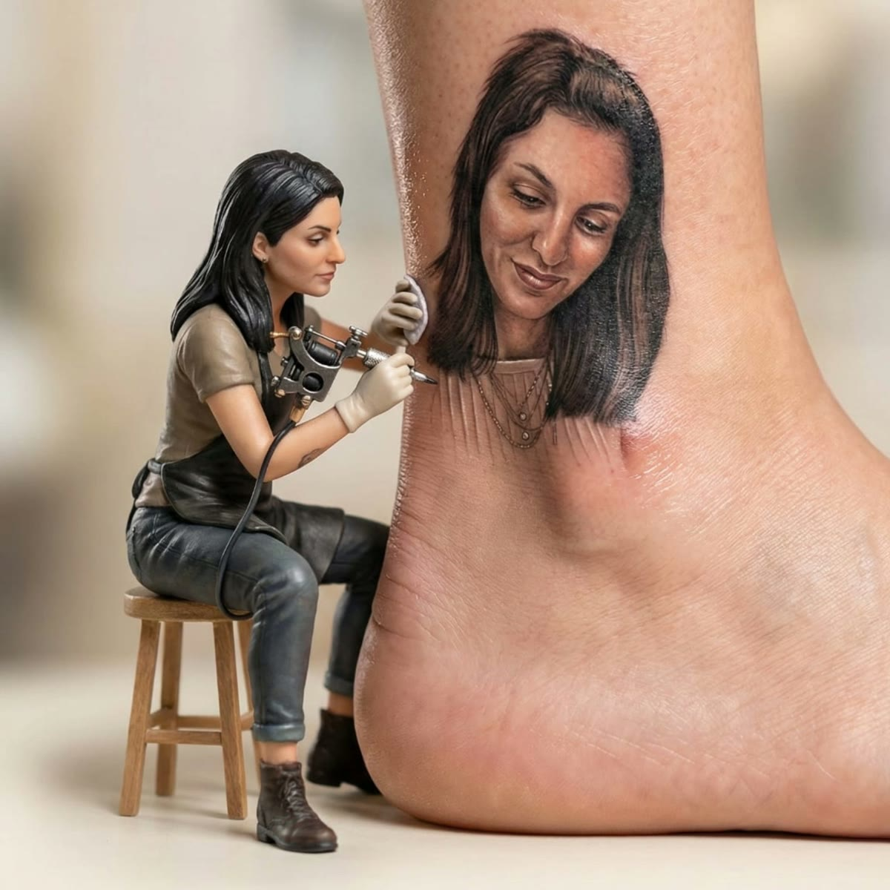
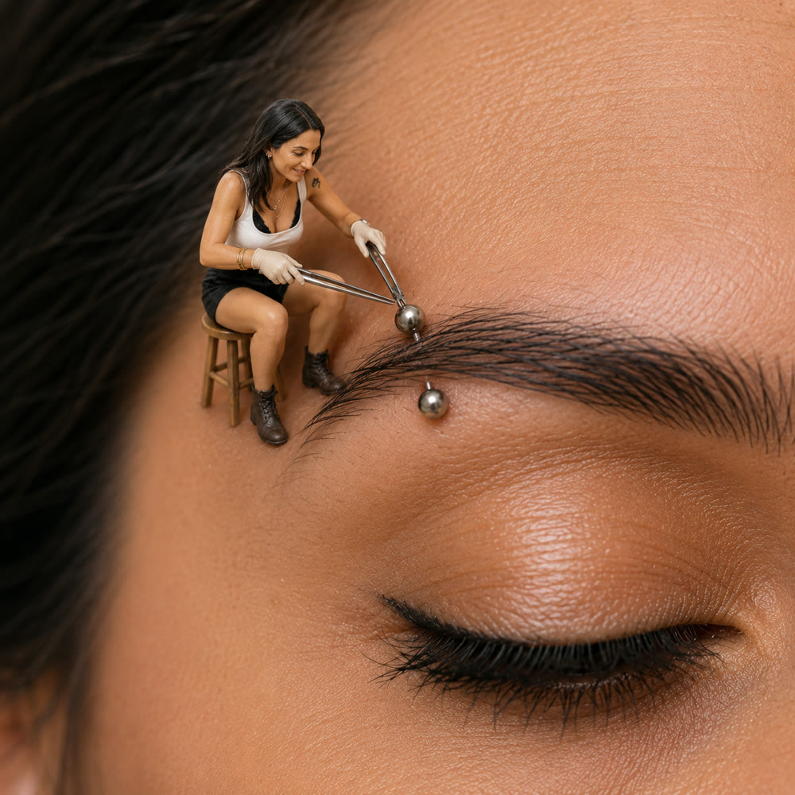

Pardo Ink Art
מדריכים והסברים מקצועיים בעולם הקעקועים והפירסינג — מהניסיון והידע של כוכבית פרדו, כרמי גת / קריית גת.

26 מאמרים · לחצו לפתיחה
אחת השאלות הראשונות שאני שומעת מכם מיד אחרי הקעקוע היא "מתי מותר להתקלח?". התשובה חשובה, כי מקלחת נכונה בימים הראשונים
קראו עוד ← TATTOOאלרגיה לדיו קעקוע היא נדירה יחסית, אבל חשוב שכולם יכירו את הנושא לפני שמתקעקעים. כאמנית שמלווה אתכם, אני רוצה שתגיעו
קראו עוד ← TATTOOבקיץ הישראלי זו כמעט השאלה הכי נפוצה שלכם: "מתי אפשר סוף סוף לחזור לים ולבריכה?". אני מבינה את הפיתוי, אבל קצת סבלנות
קראו עוד ← TATTOOאם אתם אנשי כושר, סביר שכבר בתור אתם חושבים מתי אפשר לחזור לאימון. חשוב לי שתשמרו על הכושר וגם על הקעקוע — אז בואו נדבר
קראו עוד ← TATTOOאחת ההחלטות המשמעותיות בתכנון קעקוע היא האם ללכת על בלאק אנד גריי או על צבע. אין תשובה נכונה אחת — יש את מה שמתאים
קראו עוד ← TATTOOקעקוע שהתדהה עם השנים הוא לא סוף הדרך — לפעמים דווקא ההזדמנות לתת לו חיים חדשים. אני כוכבית, ואני רוצה לעזור לכם ולכן
קראו עוד ← TATTOOקעקוע נשאר איתכם לכל החיים, ולכן מגיע לכם ולכן להרגיש בטוחים לגמרי לפני שמתחילים. אני כוכבית, ואני תמיד מעודדת את
קראו עוד ← TATTOOקעקועי אצבע הם מהבקשות הכי חמודות שמגיעות אליי — קטנים, עדינים ומלאי משמעות. אבל חשוב שתדעו וכן שתדעו מראש: האצבע היא
קראו עוד ← TATTOOקעקוע שלא יצא כמו שקיוויתם זו תחושה מתסכלת, אבל כמעט תמיד יש פתרון. אני כוכבית, ולאורך השנים ראיתי המון מקרים שנראו
קראו עוד ← TATTOOקצת אדמומיות ונפיחות ביום-יומיים הראשונים אחרי קעקוע זה נורמלי לגמרי — הגוף פשוט מגיב לפצע קטן. אבל חשוב לדעת להבחין
קראו עוד ← TATTOOקעקוע קטן ומינימליסטי הוא דרך מושלמת להתחיל — עדין, אישי, וקל יחסית להחלמה. אבל “קטן” לא אומר “פשוט”.
קראו עוד ← TATTOOהקעקוע הראשון הוא רגע מרגש. כאישה שמקעקעת נשים רבות, אני יודעת כמה חשוב להרגיש בנוח, בטוחה ובידיים טובות.
קראו עוד ← TATTOOמיקרו ריאליזם הוא אחד הסגנונות המרשימים והמאתגרים ביותר — ריאליזם מלא בקנה מידה זעיר. זה אחד התחומים שבהם אני מתמחה.
קראו עוד ← TATTOOהקעקוע החדש מתחיל להתקלף ונבהלתם? קחו אוויר — זה שלב נורמלי לחלוטין בהחלמה.
קראו עוד ← FINE LINEקווים דקים, עדינים ומדויקים שיוצרים מראה נקי ואלגנטי — אחד הסגנונות המבוקשים ביותר היום.
קראו עוד ← PRICINGאין מחיר אחיד לקעקוע, כי כל עבודה שונה — הנה מה שבאמת קובע את המחיר.
קראו עוד ← TATTOOכל מה שחשוב לדעת לפני הקעקוע הראשון — מיקום, גודל, סגנון, בחירת מקעקע, כאב והחלמה.
קראו עוד ← LASER REMOVALאיך לייזר Q-Switch מפרק את הפיגמנט, כמה טיפולים נדרשים, ותהליך ההחלמה.
קראו עוד ← TATTOO · מחקרהמדע מאחורי הקעקוע: מקרופאגים, גודל חלקיק הפיגמנט, ולמה קעקוע נשאר קבוע ובכל זאת מתרכך.
קראו עוד ← TATTOO · מדריך מלאכל השלבים במקום אחד: בחירת מקעקע, עיצוב ומיקום, הכנה ליום הקעקוע, טיפול והחלמה ושדרוגים.
קראו עוד ← LASER · מחקרהאם מותר, ולמה ההמלצה היא להמתין — הסבר מבוסס-מחקר על נדידת פיגמנט, עם מקורות מדעיים בלבד.
קראו עוד ← TATTOOמפת כאב לפי אזורי הגוף, מה משפיע על הכאב ואיך מפחיתים אותו.
קראו עוד ← TATTOOשלבי ההחלמה שבוע אחר שבוע, סימנים תקינים ומתי לדאוג.
קראו עוד ← TATTOOמדריך משחות וטיפול: מה כן ומה לא, ושגרה יומית פשוטה.
קראו עוד ← TATTOOעקרונות עיצוב, מתי צריך הבהרת לייזר ומה חשוב לבדוק.
קראו עוד ← TATTOOואיך להימנע מהן — מבחירת מקעקע ועד החלמה.
קראו עוד ←
28 מאמרים · לחצו לפתיחה
היי, כאן כוכבית מ-Pardo Ink Art. פירסינג לשון הוא נועז ומגניב, אבל הוא גם פירסינג פומי — כלומר יושב בסביבה מלאת חיידקים
קראו עוד ← PIERCINGהיי, כאן כוכבית מ-Pardo Ink Art. אחת השאלות הכי נפוצות שאני מקבלת אחרי פירסינג טרי היא איך מנקים אותו נכון — והתשובה
קראו עוד ← PIERCINGהיי, כאן כוכבית מ-Pardo Ink Art. אלרגיה לניקל היא אחת האלרגיות הכי נפוצות בעולם, והיא הסיבה המרכזית לכך שפירסינג "לא
קראו עוד ← PIERCINGהופיעה בליטה קטנה ליד הפירסינג? זה נפוץ, לרוב לא מסוכן — אבל חשוב להבין מה זה כדי לטפל נכון.
קראו עוד ← PIERCINGפירסינג לשון נשמע מפחיד, אבל מפתיע לטובה: הכאב לרוב קטן — האתגר האמיתי הוא הימים הראשונים של הנפיחות.
קראו עוד ← PIERCINGאחת השאלות החשובות ביותר, ורבים לא יודעים: **מחט ואקדח הם לא אותו דבר**. ההבדל מהותי לבטיחות ולהחלמה.
קראו עוד ← PIERCINGכמה עולה פירסינג? זה תלוי — בעיקר בסוג, בתכשיט ובמי שמבצע. הנה מה שקובע את המחיר, ולמה זול מדי זה סימן אזהרה.
קראו עוד ← PIERCINGפירסינג לילדים הוא החלטה משפחתית, ומגיע עם שאלות רבות. הנה מה שחשוב להורים לדעת כדי שזה יהיה חוויה בטוחה וטובה.
קראו עוד ← PIERCINGהטראגוס — הבליטה הקטנה מול תעלת האוזן — הוא פירסינג מגניב ומעודן שמתאים כמעט לכולם.
קראו עוד ← PIERCINGהספטום הוא מהפירסינגים המגניבים והמבוקשים — וגם אחד המובנים-לא-נכון. הנה האמת על כאב והחלמה.
קראו עוד ← PIERCINGפירסינג טבור הוא יפהפה — אבל בניגוד לרוב הפירסינגים, כאן האנטומיה קובעת אם הוא בכלל אפשרי.
קראו עוד ← PIERCINGההליקס — פירסינג בסחוס לאורך הקצה החיצוני העליון של האוזן — הוא מהפופולריים, ומהיפים לעיצוב אוזן.
קראו עוד ← PIERCINGהפרשה מפירסינג טרי מפחידה הרבה אנשים — אבל לא כל הפרשה היא זיהום. חשוב לדעת להבדיל.
קראו עוד ← PIERCINGעיצוב אוזן (Ear Curation) הוא אמנות בפני עצמה — לא סתם “עוד חור”, אלא קומפוזיציה מתוכננת של כמה פירסינגים שיושבים יפה
קראו עוד ← PIERCING · NAVELפירסינג הטבור הוא קלאסיקה — אבל כמה זה באמת כואב? התשובה מפתיעה רבים לטובה.
קראו עוד ← PIERCING · BABIESנושא רגיש שמעורר הרבה שאלות אצל הורים — מאיזה גיל, למה מחט סטרילית ולא אקדח, ואיך מטפלים אחרי.
קראו עוד ← PIERCING · מדריך מלאחומר התכשיט (טיטניום F-136), מחט מול אקדח, דיוק אנטומי, זמני החלמה ו-downsizing — עם מקורות.
קראו עוד ← PIERCINGכמה זמן להמתין, איך הנקה משפיעה על בחירת התכשיט, ומתי בטוח לחזור.
קראו עוד ← PIERCINGמיקום הדאייט בסחוס, רמת הכאב הצפויה, ההחלמה והאמת על הקלה במיגרנות.
קראו עוד ← PIERCINGביו-תאימות, ניקל ואלרגיות, משקל ועמידות, ולמה טיטניום עדיף לפירסינג טרי.
קראו עוד ← PIERCING · מחקרסקירת עומק מדעית: האנטומיה וההשתלה, ההחלמה, סיבוכים, חומרי תכשיט מאושרים והסרה.
קראו עוד ← PIERCING · מחקרסקירה קלינית מקיפה: סיווג הסוגים והאנטומיה, זמני החלמה, סיכונים והמלצות — כולל מקורות.
קראו עוד ← PIERCING · אינטימיVCH, HCH, כריסטינה, שפתיים פנימיות וחיצוניות — אנטומיה, החלמה ומה מבצעים בסטודיו. דיסקרטי.
קראו עוד ← PIERCING · מדריךתנוך, הליקס, טראגוס, רוק, דאייט, קונץ' ועוד — מיקום, כאב והחלמה.
קראו עוד ← PIERCINGנוזריל מול ספטום — רמת הכאב, מה משפיע והחלמה.
קראו עוד ← PIERCING · החלמהטבלה מלאה, למה סחוס מחלים לאט ולמה כאב אינו מדד.
קראו עוד ← PIERCINGתכשיט, מידה, מגע, בליטות — ומתי לפנות לרופא.
קראו עוד ← PIERCINGסליין, מה כן ומה לא, טיפול לפי אזור וסימני זיהום.
קראו עוד ←